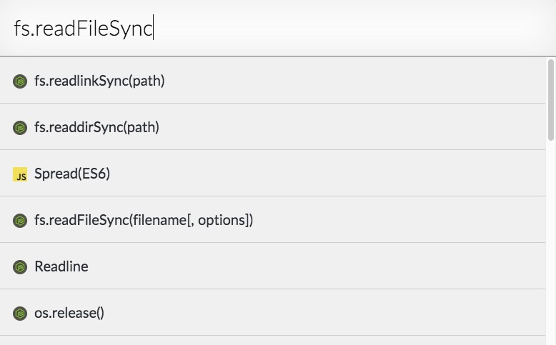
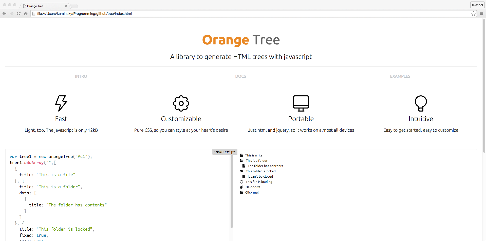
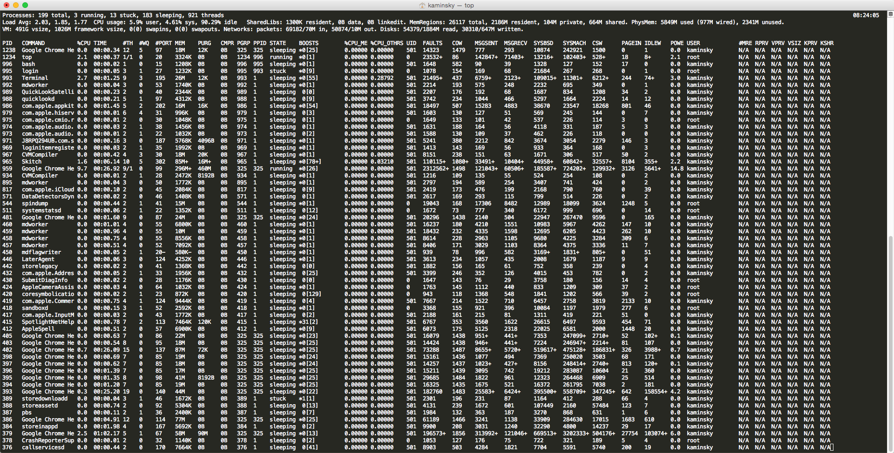

I enjoy creating things which allow users to create, experiment, and learn. I also believe in free and open-source code, as without the generosity of other developers, I would never have reached the point of giving back to the open-source community.
I am currently a junior at Marblehead High School in Marblehead, Massachusetts. My school has almost no computer science classes, so I took Java at Salem State University, Cryptography at Standford University, and Dynamic Web Applications at Harvard University. I am also the president of the
Computer and Robotics ClubA club I founded to promote Computer Science education. I help students to learn the basics of Java, web design, Linux, and other topics.
at Marblehead High School.



Everything from administration to security to chat servers
Linux
Python
Java
Node.js
Scala
Haskell
Go
MySQL
Web design that pops! I create responsive, fast, and interactive web pages
HTML
CSS
JQuery
Javascript
Less
I make applications for mobile and desktop machines
Java
Node.js
Swift
CODE YOUR CLOUD
Users:0
This is the project on which most of my time is spent. It is a code editor for Google Drive. It allows for collaborative editing, and incorporates almost all of the skills I have learned, including mySQL and Node.js. I have used it as a testing ground, experimenting with Polymer and AngularJS, among others.
IOTA
A documentation browser built with
NW.jsFormerly known as node-webkit, NW.js allows the creation of desktop applications with html, css, and javascript.
SCRIPTS
I am currently a member of the Lincoln Labs-MIT
Cyberpatriot"CyberPatriot is the National Youth Cyber Education Program created to inspire students toward careers in cybersecurity or other science, technology, engineering, and mathematics (STEM) disciplines. The program, created by the Air Force Association (AFA), features the National Youth Cyber Defense Competition for high school and middle school students."
team. The competition consists of fixing security flaws in a variety of computer systems. To help, I made some Python scripts to automatically check for and fix vulnerabilities in Ubuntu servers
NODEBOT
I regularly use ssh-chat, so I made an ssh bot for it. nodebot is capable of fetching news, doing calculations, and providing information about movies
SWIFT for CODEMIRROR
Using my knowledge of the Swift programming language, I constructed a CodeMirror mode for Swift. As far as I have found, this is the first of its kind for
CodeMirrorA library to create syntax-highlighted code editors with html, css, and javascript.
.
SNIPSAFE
This is the final project I created for my Dynamic Web Applications class at Harvard University. It is a site for storing and editing code snippets. SnipSafe was created with Laravel, and was my one of my first experiences with PHP.
FILEICONS
A small collection of flat icons that I made for the Code Your Cloud mobile app. I also published them independently for others to use.
GOOGLE.JS
I was annoyed at the complexity of Google's javascript APIs, which took me a long time to learn, particularly the Google Drive API. So, I created an easy-to-use wrapper to help others avoid similar trouble.
{kind=link}